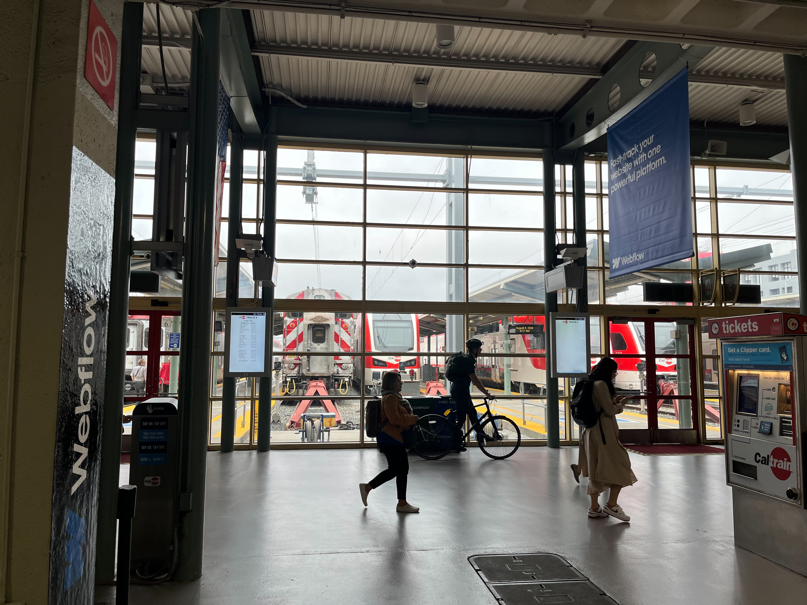
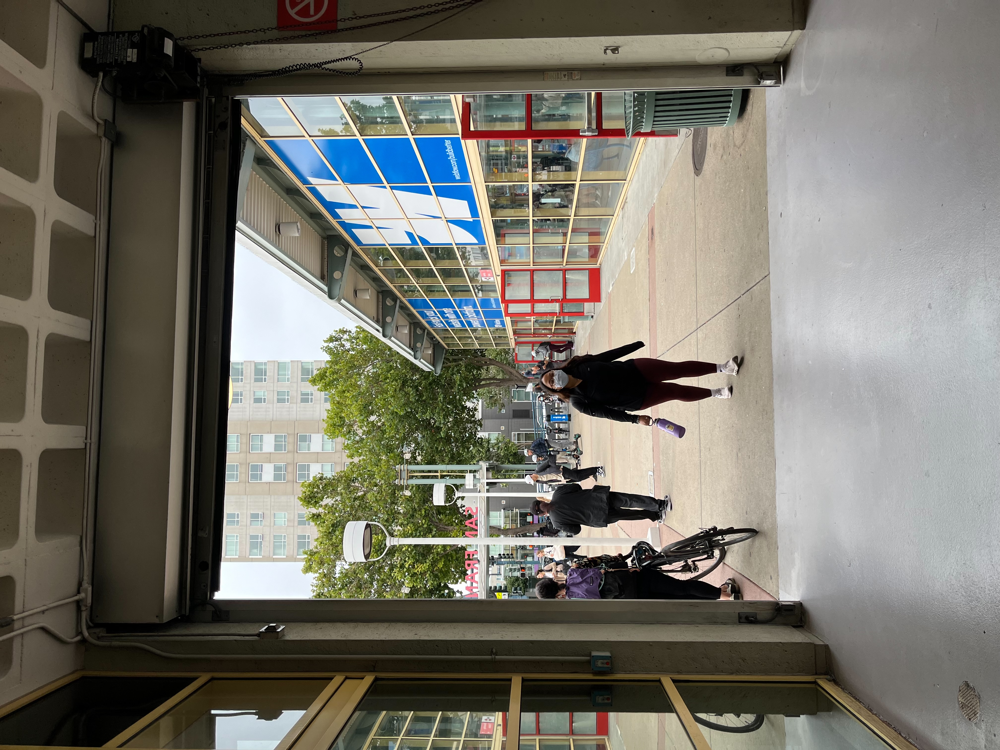
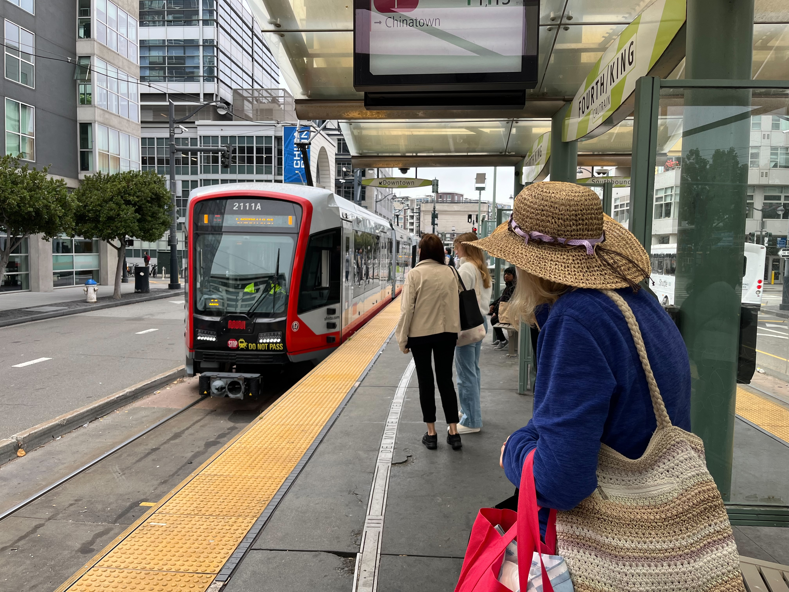
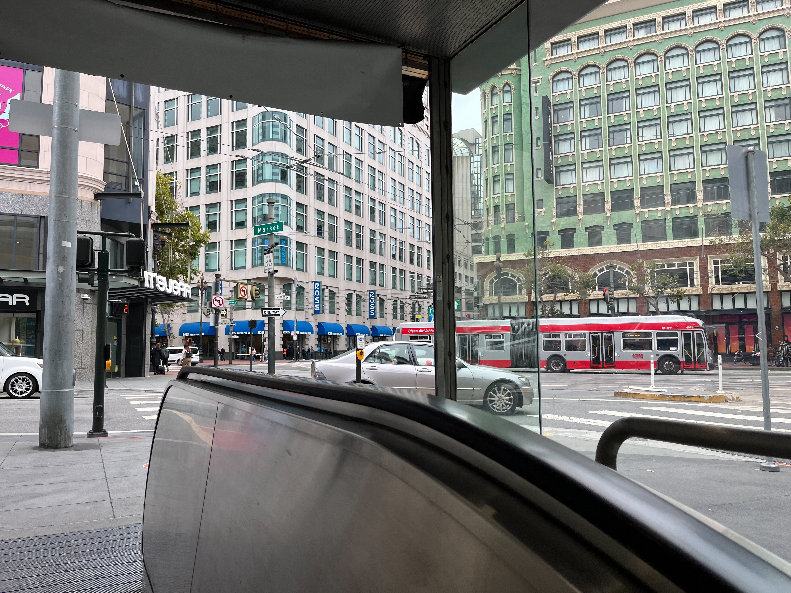
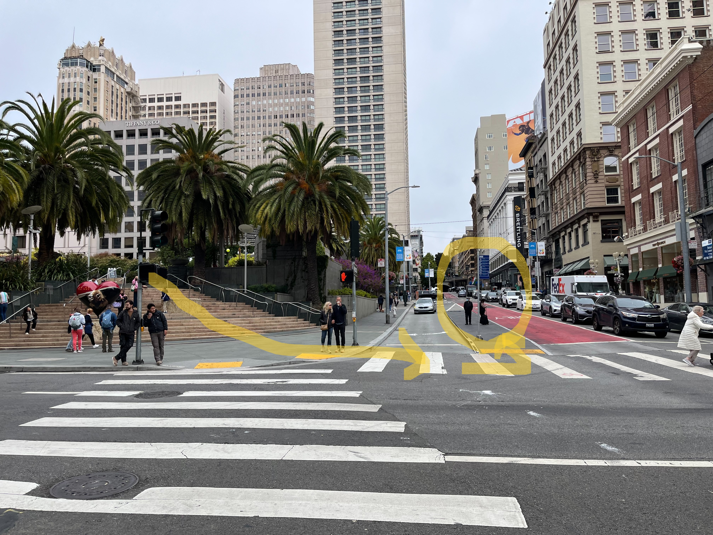
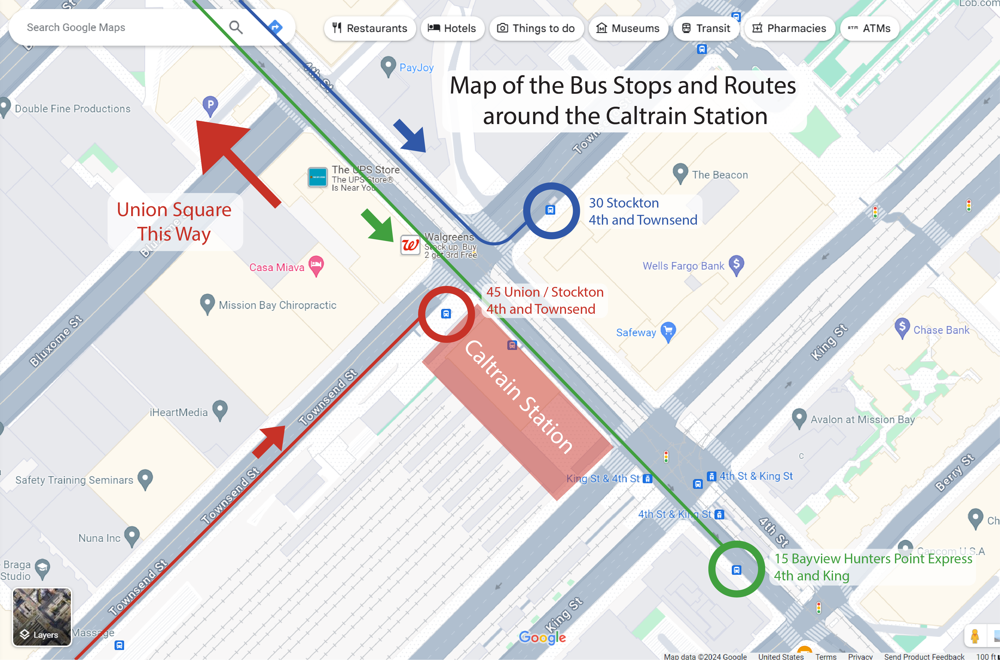

I took my first set of data points on 8/8/2024, a Thursday. Note that this article is being written AFTER the data was collected. It's also worth noting, that though I did do 5 runs, that I figured out during the run, that the data I collected was invalidated, since I likely took the wrong exit out of Union Square station on my way to Dewey Monument. I also struggled to locate exactly the location of the bus stop on my way back on my first run. My second run was marred by me accidentally resetting the stopwatch as I was writing down data and therefore possibly not exact. Upon returning home and looking through Google Maps to locate the exact street names and intersection names in preparation for writing this article, I found that there was another entrance to Union Square station located closer to Union Square than the one I took. Therefore, my data is invalid, as it unfairly adds to the travel time for the subway due to the extended walk from a further exit, as well as the multiple blunders I had in collecting data along the way. Nonetheless, I proceeded to take and analyze the data (so I know what to do when I redo this run soon and because why not) in this article.
In this article we will cover
A quick explainer of the routes taken in colllecting data.
An overview of the northbound run including methods
A similar ovewview but this time for the southbound run
A display of the data and what went wrong in the data collection
Some statistical analysis (though we won't do too much of this as the data is flawed anyway)
Some comments for what I would do differently on my next run
I arrived at San Francisco 4th and King station around 8:00 AM and after having visited an office that a high school friend was interning at, I proceeded to take data around 8:25 AM. As I described in the previous section "The Experiment", for this day, I took a trip from the 4th and King Caltrain station to the Dewey Monument in Union Square using Muni Metro's T Third Street line, routed through the Central Subway at the centerpiece of this project. I then took Muni's 15 Bayview Hunters Point Express, 30 Stockton, or 45 Union Stockton bus back to the 4th and King Caltrain station. This was repeated 5 times (quite exhausting to be honest, but still quite fun).

Picture from when I started measuring data at the Caltrain Station at 4th and King. (Picture taken 8/8/24)
I measured not only the total time between starting point and ending point, but time between any signficant events within the trip as well. This was done by simply pressing "lap" on my stopwatch. All of these times between significant events when added together would equal the total time between the starting and ending point.
For northbound runs (T Third Street), these times between significant events were:
Walk time betweeen Caltrain station to the T platform at 4th and King
Wait time on the 4th and King platform for a T train to arrive
Ride time between 4th and King to Union Square station on the T
(I started measuring a rough time taken for the train to actually reach the Central Subway tunnel starting on my second run as well)
Walk time between Union Square station platform to the Dewey Monument
For southbound runs (15 Bayview Hunters Point Express / 30 Stockton / 45 Union Stockton), these times between significant events were:
Walk time from the Dewey Monument to the bus stop at Stockton and Geary
Wait time at the Stockton and Geary bus stop for the next 15, 30, or 45 to arrive
Ride time between Stockton and Geary to Townsend and 4th near the Caltrain station
Walk time between Townsend and 4th to the Caltrain station
An Overview of the Northbound Run Involves
Leaving the Caltrain Station at 4th and King streets. The stopwatch was started the moment I left the doors of the station facing 4th and King streets.

I started measuring the time the moment I walked out of the doors at the Caltrain Station facing the intersection of 4th and King streets. (Picture taken 8/8/24)
Walking to the T platform. This involved crossing two crosswalk, first across King street, and then half of 4th street onto the T platform in the medan of 4th street. The time for "Walk time betweeen Caltrain station to the T platform at 4th and King" stops when I finish climbing the ramp onto the T platform.
Approaching the crosswalks at 4th and King streets on my way to the T platform. (Picture taken 8/8/24)Waiting to cross the crosswalks at 4th and King streets. (Picture taken 8/8/24)The ramp to the T platform at 4th and King in the median of 4th street, looking North towards Union Square. The entrance to the Central Subway is just visible at the center of the image where an overpass and tunnel entrance exists. Note the Caltrain station on the left side. The moment I got over the ramp, "lap" was clicked on my stopwatch, and time spent walking between the Caltrain and T platform stopped recording, and time spent waiting for the T train started recording. (Picture taken 8/8/24)
Waiting for the T Third Street train that would take me to Union Square Station. The moment I get to the T platform, wait time for the T train begins. The wait time for the T ends when I step on the train, and the stopwatch then measures the time I spend on the train to Union Square station.
Standing on the T platform at 4th and King, waiting for my train, looking South at the direction my train will arrive. Headways on the T are 10 minutes, as detailed in "The Background and the Idea". (Picture taken 8/8/24)

The T train arrives at platform. Time spent waiting ends when I step on the train. The stopwatch then starts measuring the time I spent on the train itself. (Picture taken 8/8/24)
Taking the T to Union Square station. Time spent on the train starts when I step on the train, and ends when I step off of it at Union Square station. The T runs about half a mile north on the median of 4th street, obeying traffic lights until it enters the Central Subway just ahead of the intersection on 4th and Bryant streets. Union Square station is the 3rd stop. The T stops at 4th and Brannan, still in the median of 4th street, and then once in the Central Subway, at Yerba Buena / Moscone Center, and then at Union Square / Market Street Station. The T would continue on one more stop to Chinatown Rose Pak station where the line ends. Unforntuately I have no image of the ride.
Leaving Union Square station, and heading to the Dewey Monument. Once I step off the train, the stopwatch begins measuring the time spent walking from the platform to the Dewey Monument close by. I took the exit from the platform that directed me to Powell station nearby where I could transfer to the other Muni Metro lines as well as BART. Once past the fare gates, I turned left to the exit at Stockton and Ellis street. I took care not to walk on the escalators.
As I leave Union Square station I am greeted by downtown San Francisco at Stockton and Ellis street, by Market Street. (Picture taken 8/8/24)
Having walked across two crossings obeying all traffic laws, I approach Union Square at the intersection between Stockton and Geary. The median strip straight ahead is where I will board the bus back to the Caltrain station. (Picture taken 8/8/24)As I walk up the steps to Union Square, I see the Dewey Monument at the center of the plaza. When I reach it, is when time recording is finally stopped. (Picture taken 8/8/24)
An Overview of the Southbound Run Involves:
Leaving the Dewey Monument. The stopwatch was started the moment I turned around and left the foot of the monument.
Walking to the bus stop at Stockton and Geary streets. Either the 15 Bayview Hunters Point Express, 30 Stockton or 45 Union / Stockton will take me back to the Caltrain station. The bus stop for the southbound 15, 30, and 45 is located on a median island strip between a left turning slip lane from Stockton street running south to Geary street running west. Lap is clicked on the stopwatch when I cross the left turn slip lane and reach the median. I took care to obey all traffic laws. It's easy to walk across the left turn lane, as it's only one lane and as long as you're careful, you could simply jaywalk across it to catch an incoming bus, but for the purpose of fairness, there will be no running or jaywalking.

The bus stop as seen from when I approached Union Square. The route out of Union Square to the bus stop and the stop itself is circled in yellow. (Picture taken 8/8/24)
Waiting for the next bus that would take me back, the 15, 30, and 45 buses. Unfortunately I have no image.
Taking the bus to the bus stop nearest to the 4th and King Caltrain station. Time spent on the bus starts when I step on the bus, and ends when I step off of it at my destination. The routing of the 3 buses are complicated and is explained below.
The 15 bus runs south down Stockton, and once it crosses Market Street, runs straight down 4th street until it reaches the Caltrain station at 4th and King street. Once I get off the bus however, I have to cross King street, the same street I crossed to get to the T platform from the Caltrain station, except this time, I'm crossing in the other direction. The 15 arrives every 12 minutes on weekdays during mornings and midday. This is lower frequency than the Muni Metro T line. [1]
The 30 bus has two variants, the 30 short and the 30 long. This is not an issue to us however, as the difference in routing happens north of Union Square. The 30, like the 15 runs straight down 4th street. However, the 30 terminates at the Caltrain station unlike the 15 which continues south. This means that the 30 takes a left at Townsend street to loop around for a northbound run down adjacent 3rd street. Though the Caltrain station is addressed at 4th and King streets, since the station takes up the whole block between King and Townsend streets, the 4th and Townsend bus stop is actually right in front of the Caltrain station. However, as the 4th and Townsend bus stop for the 30 is on the other side of 4th street from the Caltrain station, it requires us to cross Townsend street with a possible traffic light hindering our progress. The 30 short arrives every 7 minutes in the morning and 6 minutes midday on weekdays, and the 30 long arrives every 15 minutes in the morning and 12 minutes midday on weekdays. The 30 short and long together provide a frequency far greater than the Metro T line. [2]
The 45 bus runs the same route that the 15 and 30 does, but takes a right at Harrison street so that it can then turn left down 5th street. At the intersection of 5th and Townsend streets, the bus turns left to run west down Townsend, where it drops me off at another bus stop named 4th and Townsend. However, this 4th and Townsend stop is on the side of 4th street that the Caltrain station is on, therefore I simply hop off the bus and walk to the Caltrain station in under a minute. The 45 bus runs every 10 minutes in the morning and midday on weekdays. This is identical frequency to the Muni Metro T line. [3]

A map showing the routes and locations that each bus, the 15, 30, and 45 drops off passengers at near the Caltrain station at 4th and King. Note the two different 4th and Townsend stops for the 30 and 45 respectively, with the 45's stop being much closer. Also note the 15's stop being much farther from the Caltrain station than the 30 and 45 despite the bus stop's name matching the address of the Caltrain station, 4th and King. Original map courtesy of Google Maps. (Picture edited and uploaded 8/23/24)Stepping off of the 45 Union / Stockton bus at the 4th and Townsend bus stop closest to the Caltrain station. The station is only steps away from this stop. Note that there is another 4th and Townsend stop that the 30 Stockton drops us off at on the other side of 4th street. (Picture taken 8/8/24)
Stepping off of the bus, we walk from the various bus stops for each bus route as explained above to the nearest entrance at the San Francisco Caltrain station.
The entrance to the Caltrain station facing Townsend street. The entrance is mere steps away from the 45 bus' 4th and Townsend stop. Note the bus parked in the left side of the photo across the street. That is the 30 bus' 4th and Townsend stop.
A display of the Data and What Went Wrong
The data recorded is shown below in the image, a spreadsheet with all my times recorded. This data, as we will see very soon, is invalidated, both because I took the wrong exit out of the Union Square subway station, and because I caused multiple blunders. It is worth noting that the chart below was created AFTER I recorded data, and that the original data was scribbled down on a chart on a small folded letter size piece of paper. I was planning on creating a much more thoughtful chart on my way to San Francisco, but I coincidentally ran into a high school friend on the train, and I ended up chatting the whole way. As the chart shown below has more thought put into it, and all the variables I wanted to measure, some boxes are left empty, as on this run, I didn't measure all of it. The runs highlighted in red are possibly inaccurate data due to the fumbles I made. The reasons why said data is inaccurate is detailed to the right of the respective runs.
The chart showing the data from my invalidated runs on 8/8. Inaccurate data due to my fumbles are highlighted in red. Not all variables have been measured and / or recorded.